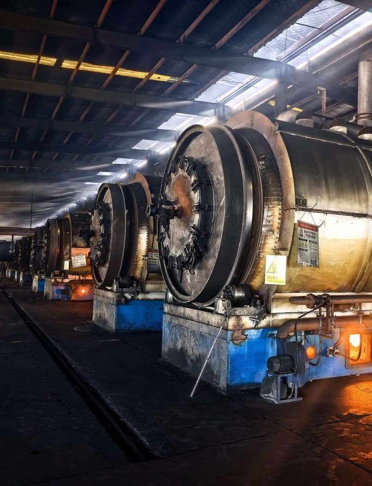
SINCE 2018 · SHANGQIU, HENAN
热解 · 蒸馏 · 炭化 PYROLYSIS · DISTILLATION · CARBONIZATION
成套装备制造 · 交钥匙交付
从废料到资源，从图纸到出油。
01产品矩阵
产品矩阵
五条产品线，一套工艺体系：热解出油 → 蒸馏提纯 → 炭渣深加工，可单机、可整线、可组合。
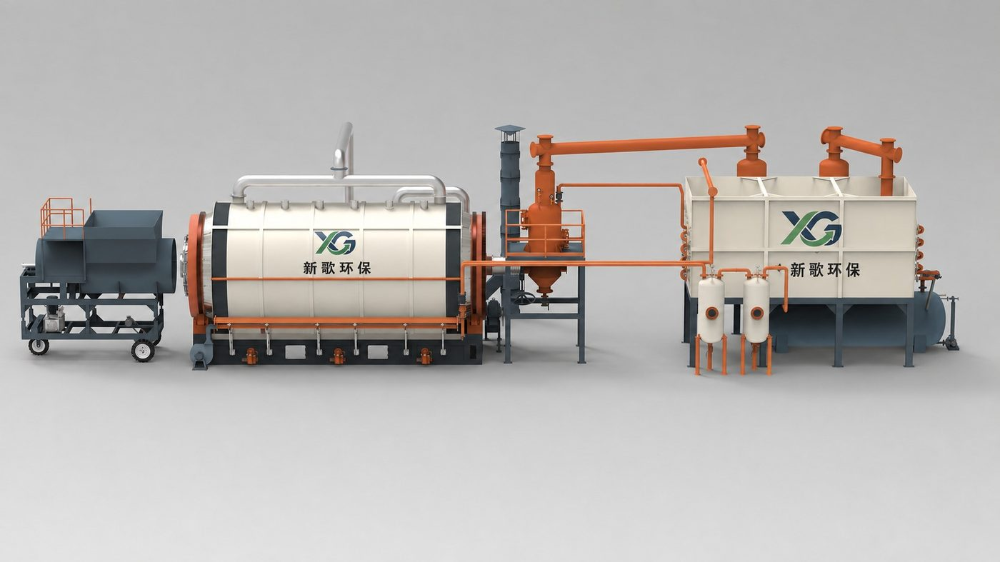
1 – 45 TPD间歇式裂解
卧式旋转釜，一批一釜；整胎近乎直接进料（只需切圈口），抓机出钢丝、炭黑装吨袋，两份都能卖。
参数与项目 →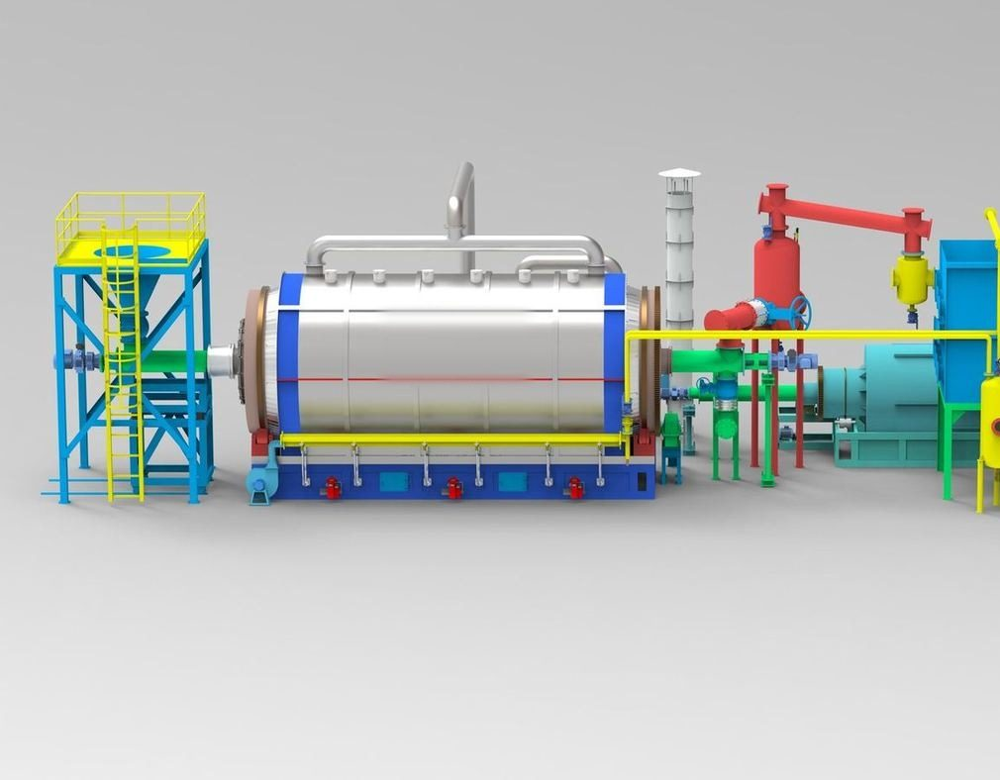
1 – 4 TPD撬装式裂解
一体撬装，到场接管即用；适合小规模试产与分布式收集点。
参数与项目 →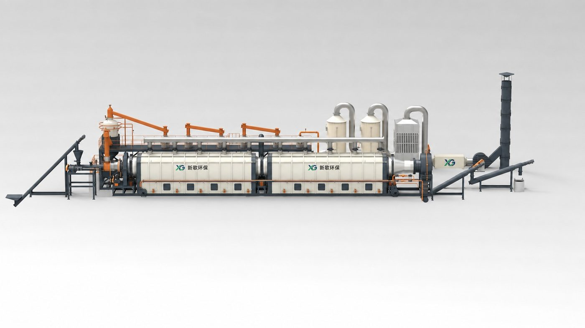
30 – 50 TPD连续式裂解
氮气置换、连续进出料，高温密封出渣不停机，一台炉两名工人。
参数与项目 →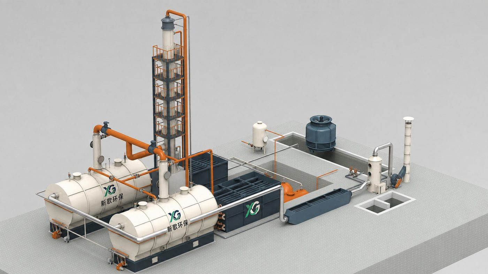
8 – 30 TPD废油蒸馏
常压 / 减压精馏，柴油组分收率 75%–90%，无工艺污水外排。
参数与项目 →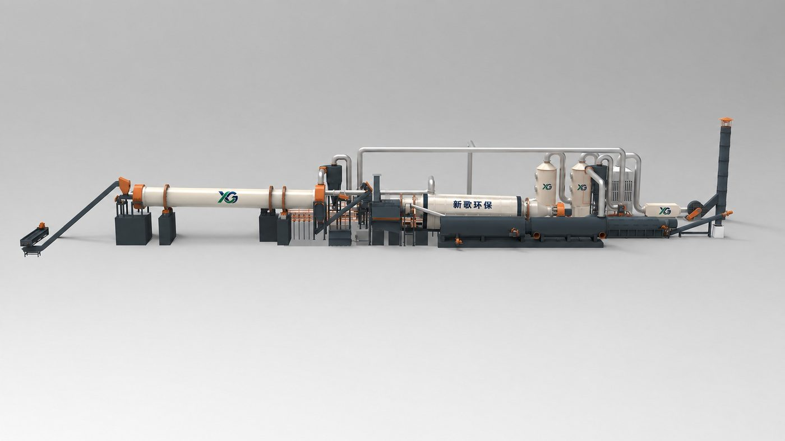
1 – 3 t/h生物质炭化
连续式气炭联产，自产可燃气回供，1/3 热能自用、2/3 供烘干。
参数与项目 →常见组合
02工艺流程与安全
工艺流程与安全
密闭、无氧、微负压——安全靠结构，不靠人盯。
- 01氮气置换制氮机把反应釜内氧气置换出去
- 02升温燃油或不凝气加热，2–5 h 升至约 400 °C
- 03无氧进料自动上料器连续进料，密封进料段
- 04热解分离喷淋气包 → 沉降罐去重油 → 冷凝成燃料油
- 05不凝气回用两道水封 + 阻火器进热风炉，为后续批次供热
- 06烟气净化二级喷淋脱硫除尘 → 引风机 → 烟囱
- 07密封出渣全自动出渣，过程无泄漏
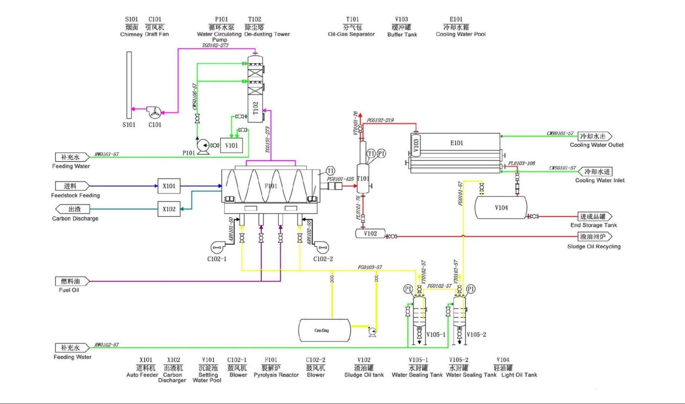
关键控制点
排放承诺按项目地标准执行：配脱硫除尘（可选脱硝）可达标，不做「天生达标」的承诺。
03产物与应用
一吨废轮胎，四份可卖的产出。
一批料的投入以 10 TPD 间歇式线每批 10 t 轮胎为例
一批料的产出
折成一年
第三方实测 · 轮胎裂解油
临淄美高油品技术服务中心（2026-09-07 收样）· 未精制裂解油，精制后指标另计
投入为 10 TPD 间歇式线的运行口径，随原料、含水率、气候与终点判定浮动；钢丝视轮胎类型另计，故四项产出合计不等于 10 t。设备投资、运行成本与回本期随各国电价、油价与人工差异极大，按项目单独测算，不在本册列明。
04生产基地
50 亩厂区，从钢板到整机不出厂。
厂房内配行车、卷板、下料、机加工、焊接与总装工位，主炉、冷凝、除尘、气路、电控按整线预装后再拆运。批量订单一排排下料、一排排焊接，交期可控；客户到厂可随时看到自己的设备做到哪一步。
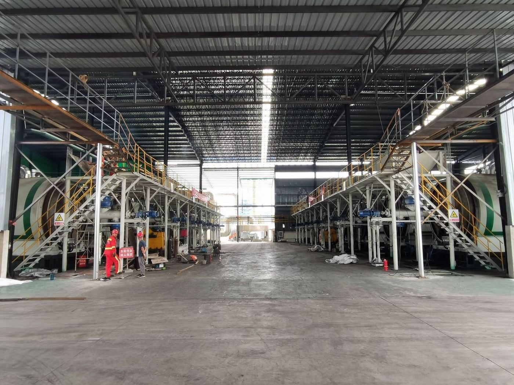
制造与品控
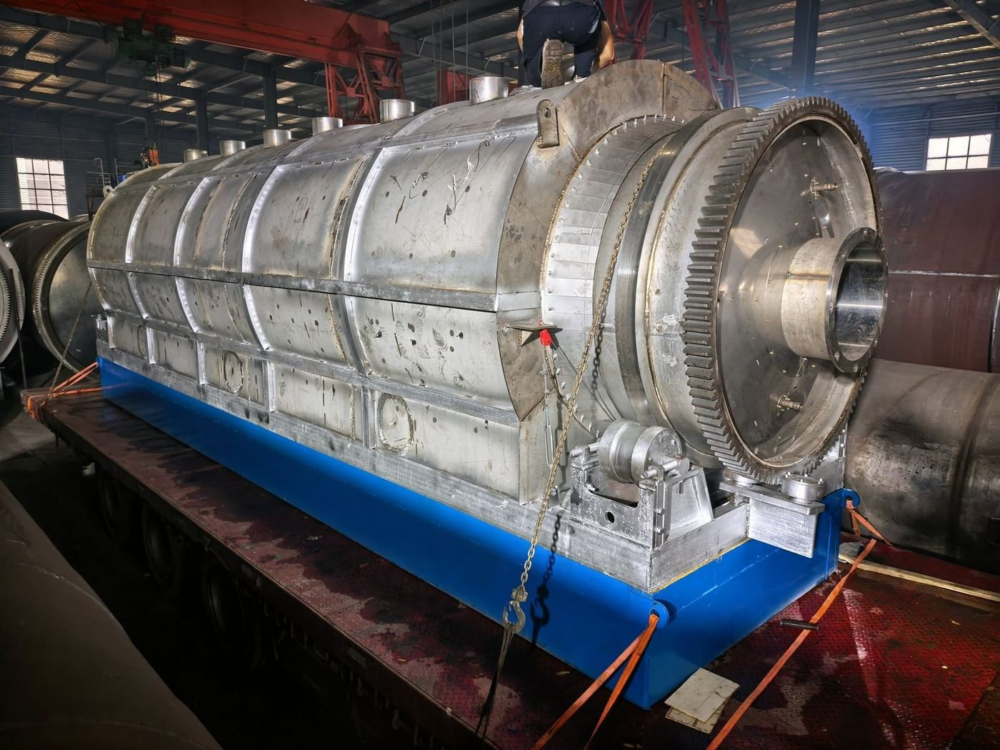
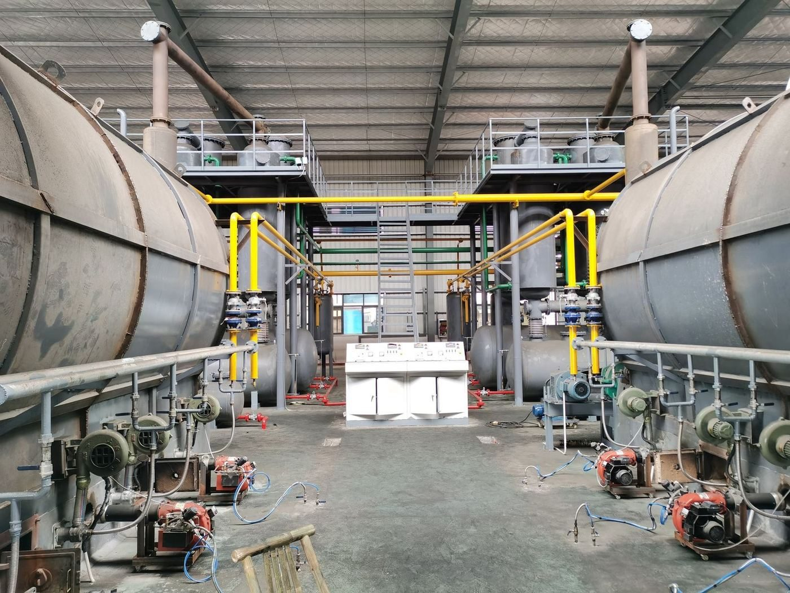
05资质与认证
体系、出口与专利，按标准编号可核验。
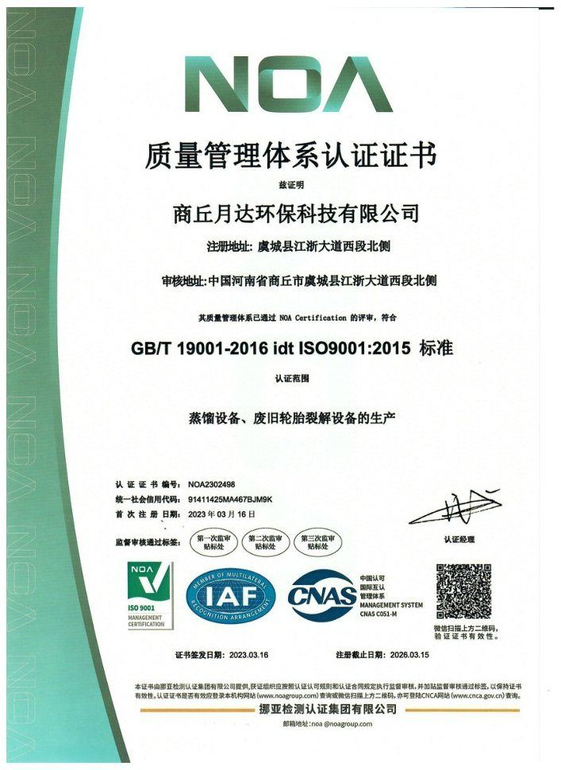
质量管理体系 蒸馏设备、废旧轮胎裂解设备的生产 · NOA 颁发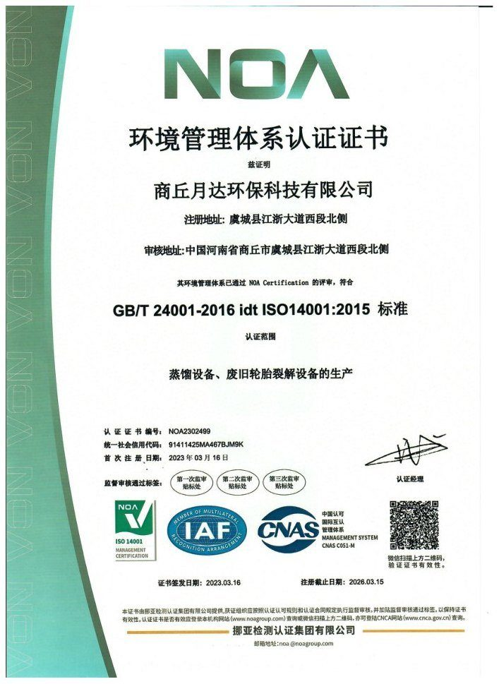
环境管理体系 同一认证范围 · NOA 颁发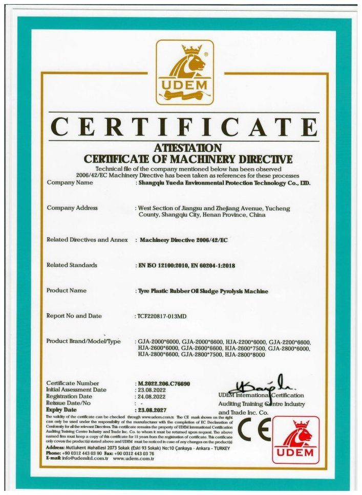
欧盟机械指令 CE 轮胎 / 塑料热解设备 · UDEM 颁发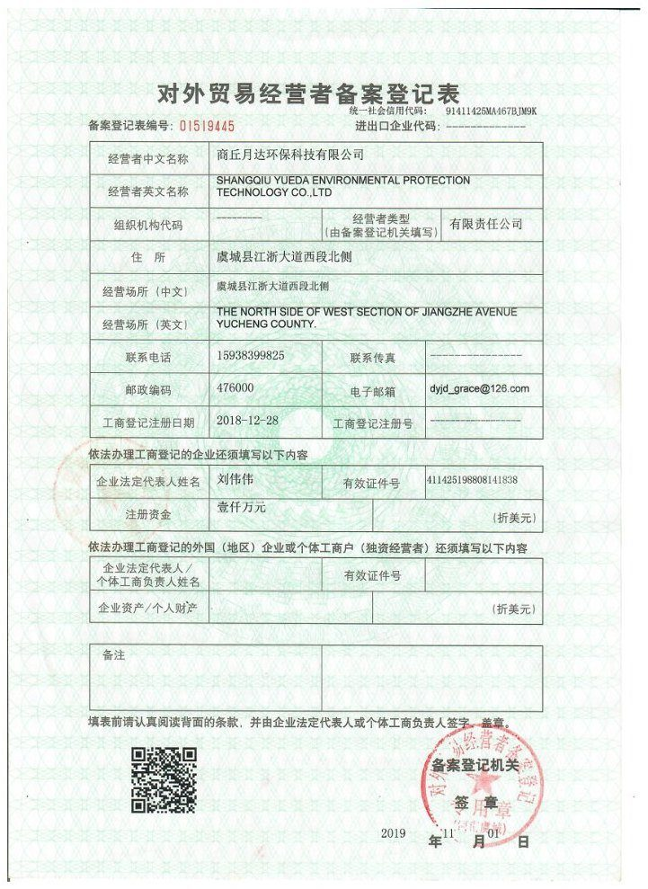
对外贸易经营者备案 进出口企业代码在册，可自主出口报关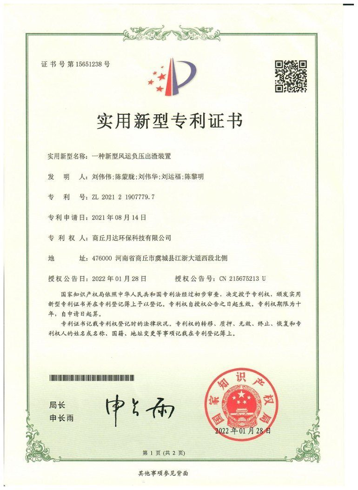
实用新型专利 一种新型风运负压出渣装置公司累计 12 项专利技术。资质文件可到厂查验；对外文件不引用未经核实的有效期。
06客户与现场
30 多个国家，同一套交付标准。
| 国家 | 项目 | 机型 / 吨位 | 原料 |
|---|---|---|---|
| 斯里兰卡 | Ecolux Bio Harvest | 间歇式 15 / 50 TPD | 废塑料 |
| 墨西哥 | Cxx | 间歇式 15 TPD | 废轮胎 |
| 波兰 | 政府项目 | 连续式 40 TPD | 粪浆 / 污泥 |
| 摩洛哥 | Mohammed Elsoffi | 间歇式 45 TPD | 轮胎 + 塑料 |
| 伊朗 | Dr. Vahab Nevayi | 间歇式 20 TPD | 废轮胎 |
| 越南 | Zana / David | 撬装 2×1 TPD + 蒸馏 1 TPD | 轮胎油 |
| 埃及 | George | 间歇式 1 & 5 TPD | 废轮胎 |
| 土耳其 | Fevzi / Kqamar | 间歇式 10–60 TPD | 轮胎 / 塑料 |
| 秘鲁 | Peru Bioquimicos | 间歇式 2 / 10 TPD | 废塑料 |
| 阿富汗 | SCRC / Said Asimi | 间歇式 10–20 TPD | 废轮胎 |
| 巴基斯坦 | Farooq | 间歇式 2 / 5 TPD | 废轮胎 |
| 中国 | 福建 / 河南项目 | 间歇式 15 TPD ×4 套 | 塑料 / 轮胎 |
07服务与交付
卖设备，也负责让它出油。
典型交期（间歇式）
连续式约 70 个工作日交货；海外项目含海运与清关，按目的港单独排期。
08技术文章
技术文章与项目案例
出油率与一批料的投入产出怎么算、名录里的项目怎么讲，以及每篇能落到原文的口径说明。 这一栏持续更新；产品线的参数与交付条件在产品页上，不在这里。
案例：墨西哥 15 TPD 废轮胎间歇式
项目名录中的一条：墨西哥，间歇式 15 TPD，原料废轮胎。页内只写名录与 YD-15 的公开参数，不补充未公开的运行数据。
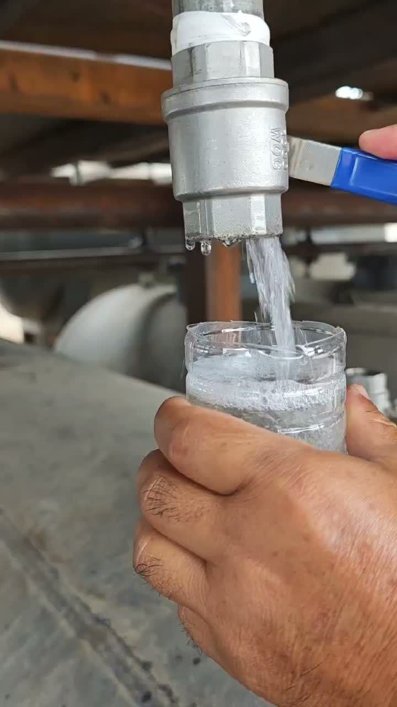
裂解出油率与一批料的产出
轮胎间歇式出油率 45%–50%。10 TPD 线每批 10 吨轮胎的用电、补水、人工与油、炭、气产出，按画册口径列出。